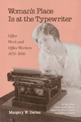

<body bgcolor="#FFFFFF" text="#000000" link="#0000FF" vlink="#CC0000" alink="#CC0000"><center><hr width="350" size="1" align="center" noshade>Explores the shift in the context of patriarchal social relations that assigns a sexual divison of labor as "natural"<hr width="350" size="1" align="center" noshade><p><a href="https://cdcshoppingcart.uchicago.edu/Cart/ChicagoBook.aspx?ISBN=9780877222910&&PRESS=temple" target="_top">Buy this book!</a> | <a href="https://cdcshoppingcart.uchicago.edu/Cart/Cart.aspx?PRESS=temple" target="_top">View Cart</a> | <a href="https://cdcshoppingcart.uchicago.edu/Cart/Cart.aspx?PRESS=temple" target="_top">Check Out</a></p><p></p></center><!--none//--><h1>Woman's Place Is at the Typewriter</h1>
<H2>Office Work and Office Workers, 1870-1930</H2>
<h3>Margery W. Davies</h3>
<P>cloth 0-87722-291-6 $29.95, Dec 82, <FONT COLOR=#990033>Out of Print</FONT>
<br>paper 0-87722-368-8 $27.95, Aug 84, <FONT COLOR=#990033>Out of Stock Unavailable</FONT>
<br>Electronic Book 1-43990-582-7 $30.95 <FONT COLOR=#990033>Out of Print</FONT>
<BR> 256 pp
</P><BLOCKQUOTE><I>"Compelling. It serves as a lesson and a warning, for it might disabuse many women of their notion that the first step toward the executive ladder is at a typewriter. Certainly [it] suggests MBAs for aspiring women, rather than Smith-Coronas."</I>
<br>&#151<b><I>Boston Sunday Globe</I></b><I></I></BLOCKQUOTE>
<p>In most societies, a sexual division of labor is usually regarded as "natural." Thus, in the United States today not only does it seem proper that woman’s place is at the stove, or with the children, or in the classroom, or at the typewriter, but it also seems "natural" it was always so. Looking at clerical workers, the author shows how work once performed by men became redefined as "women’s work." She explores this shift in the context of patriarchal social relations and political-economic forces. The interaction of which determined woman's place in the office.
<p>Before 1900, male clerical workers, as apprentice capitalists, performed a wide variety of tasks that helped them learn the business. By 1930, the class position of clerical workers had changed, and autonomous male clerks were transformed into working class females&#151a "secretarial proletariat."
<p>Based on business histories, corporation records, correspondence. and even fiction. Dr. Davies’ work demonstrates how the feminization of clerical work is historically specific rather than ordained by nature; how it reflects the peculiar forms which patriarchy have assumed in the United States; and how the working class status of contemporary office workers began to take shape at the end of the nineteenth century.
<p>From the time the first female office worker was hired by US Treasurer General Elias Spinner during the Civil War and it became apparent that female labor was cheaper than male, women became increasingly visible in the office. The author accounts for this by discussing the decrease in productive work in the home, the perceived higher status of office work, and the better working conditions in offices. She also looks at scientific office management, which crystallized labor specialization and helped eliminate worker control over work. Examining the role of the private secretary, she concludes this apparently more attractive position served to mask the realities of typical office work.
<p>Perhaps the most interesting conclusion reached in this book is that the degradation and the proletarianization of office work were disguised by the shift from male to female workers. The nineteenth-century clerk has not turned merely into a proletarian: he had turned into a woman.
<BR>&nbsp;<h2>Reviews</h2>
<p><I>"One of the first books to tackle this important topic and as such admirably begins to fill the gap. . . . A critical contribution."</I>
<br>&#151<b><I>The Journal of American History</I></b>
<p><I>"Lively reading. Davies' review of the impact of the typewriter proves a useful perspective for those trying to evaluate the impact of the word processor on social roles and labor markets in the 1980s."</I>
<br>&#151<b><I>Choice</I></b>
<BR>&nbsp;<H2>About the Author(s)</H2>
<P><b>Margery W. Davies</b> received her Ph.D. in Sociology from Brandeis University and is editor of the journal <I>Radical America</I>.</P>
<BR><H2>Subject Categories</H2>
<p><A HREF="/tempress/american.html" TARGET="_top">American Studies</a>
<BR><A HREF="/tempress/women.html" TARGET="_top">Women's Studies</a>
</p>
<BR><h2 class="inpageheading">In the series</H2>
<P><I><a href="http://www.temple.edu/tempress/class_culture.html" onMouseOver="window.status='Click for other books in this series!'; return true;" onMouseOut="window.status=''; return true;" target="_top">Class and Culture</a></i></p><p>No longer active.</p>
<p align="center"><a href="https://cdcshoppingcart.uchicago.edu/Cart/ChicagoBook.aspx?ISBN=9780877222910&&PRESS=temple" target="_top">Buy this book!</a> | <a href="https://cdcshoppingcart.uchicago.edu/Cart/Cart.aspx?PRESS=temple" target="_top">View Cart</a> | <a href="https://cdcshoppingcart.uchicago.edu/Cart/Cart.aspx?PRESS=temple" target="_top">Check Out</a></p><p><font face="Arial" size="1"><a href="copyright.html" onMouseOver="window.status='Web Copyright Policy';return true;" onMouseOut="window.status=''" title="Web Copyright Policy">&copy;</a> 2015 <a href="http://www.temple.edu" target="new" onMouseOver="window.status='Link to Temple University home page';return true;" onMouseOut="window.status=''" title="Link to Temple University home page">Temple University</a>. All Rights Reserved. http://www.temple.edu/tempress/titles/273_reg.html</font></p>